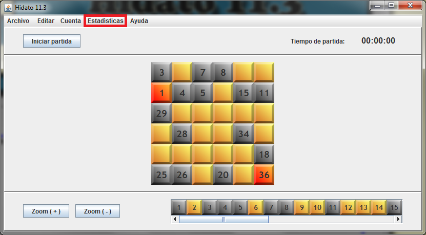
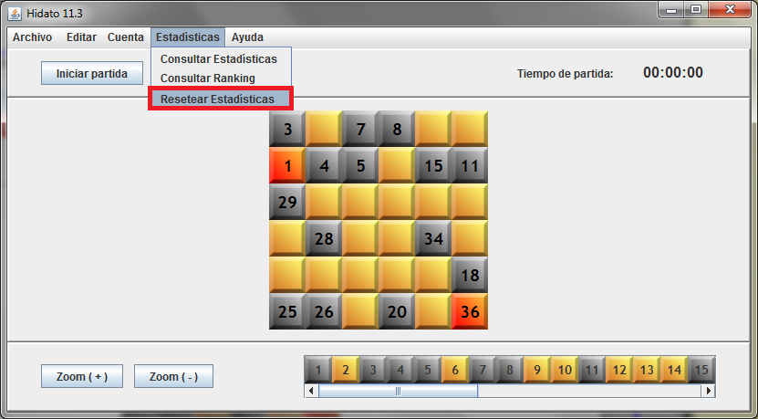
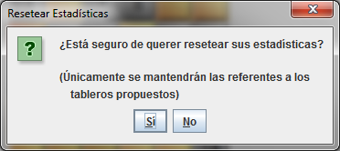

Seleccion el menú 'Estadísticas':

Seleccione 'Resetear Estadísticas':

Aparecerá el siguiente diálogo:

Si pulsa 'Sí', se pondrán a 0 todas sus estadísticas personales, excepto el número de tableros propuestos. Si pulsa 'No' se abortará la operación.